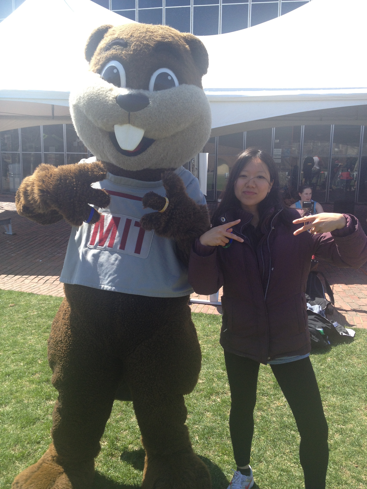
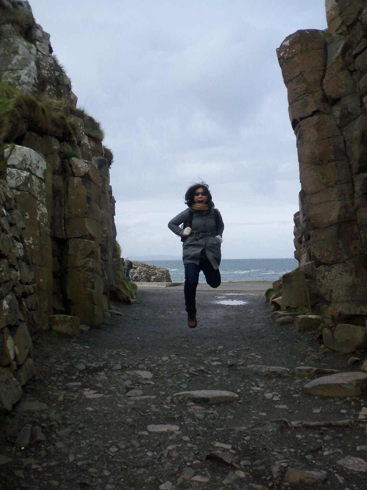
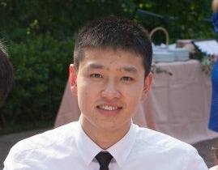
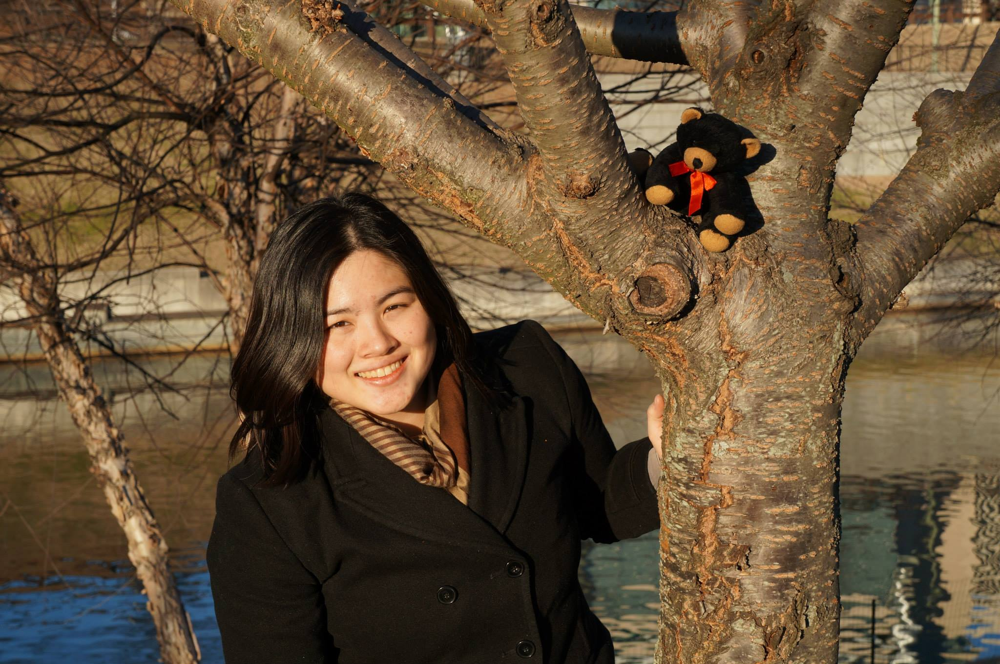

Meet Our Team!

Ye Yao, Co-Director aka Chief Jedi
Ye was born in China, grew up in Florida (USA), and trained at the Jedi Temple headquarters of MIT. She is now working hard to nurture this PN2K Boston-based nonprofit to long-term sustainability. Originally a pre-med whose summers consisted of biological engineering projects, cognitive neuroscience research, and volunteering at Children's Hospital Boston, she found her calling after a few core classes at the MIT Sloan School of Management. This experience ignited the fire that sent her halfway around the world on multiple trips. She realizes that not everyone is this lucky and hopes to establish Peace and Order in the galaxy by building meaningful businesses. Ye is beyond excited to be working alongside our Directing Samurai and "using the Force" to lead their fearless team. One line she takes to heart from the Jedi Order: "The choice is yours alone. Do what you think you cannot do. It will be a hard life, but you will find out who you are."

Carmel Mercado, Co-Director aka Directing Samurai
Doctor of Medicine by day, PN2K Co-Director by night, Carmel works tirelessly around-the-clock as DIrecting Samurai. She first began sharpening her mind, body, and spirit as a warrior-in-training at the Massachusetts Institute of Technology (Class of 2009), where she served in various teaching and mentorship roles, including as a Teaching Assistant for multiple courses and a Freshman Associate Advisor. She was also involved as a teacher and mentor for Breakthrough Collaborative in Fort Lauderdale, FL and Cambridge, MA and for different educational and international exchange programs in Japan. As one of her most respected senseis once told her, "Knowledge makes you knowledgeable, but it is experience that makes you wise." Through PN2K's educational initiatives, she hopes to inspire young minds to have the curiosity to learn and experience life. And she wants everyone who rides a bicycle to wear a helmet too.

Jeff Xing, Treasurer
Jeff Xing is a full-time medical student at the University of Virginia School of Medicine and has served the Treasurer role from 2012. From June 2011 to June 2013, Mr. Xing conducted genomics research at the Broad Institute. He previously volunteered at Massachusetts General Hospital and worked with One Laptop Per Child. Mr. Xing holds a B.S. from the Massachusetts Institute of Technology.

Tian Ong, Resident Agent
Tian Ong graduated MIT, Class of 2011, with a Bachelors in Chemical Engineering. Tian has prior leadership experience with SEALNet. In addition, she has been Resident Agent of the PN2K foundation since its incorporation in 2012. Fun fact: she likes penguins.
Ashley Smith, Webmaster aka Certified Pirate
Ashley is senior double majoring in Computer Science & Engineering and Management Science at MIT. When she's not working on this super fun website, you can often find her watching the Red Sox beat the Yankees, coding Android apps, or taking PE classes such as sailing, fencing, pistol, and archery to become a certified pirate.